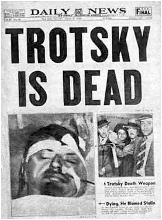

CHƯƠNG XX
Vào Tháng giêng năm 1945, Không Quân Mỹ oanh tạc từ một năm rồi,bấy giờ tăng cường ném bom chủ yếu trên đường sắt xuyên Đông Dương,dường như báo hiệu Đồng Minh sắp đổ bộ ở Đông Dương. Bộ chỉ huyquân sự tối cao của Nhật liền quyết định đặt Đông Dương dưới quyềnquản trị quân sự trực tiếp của Nhật.
Hiệp Ước thân thiện Nhật ký với Liên Sô vào tháng tư năm 1941-Stalin để người Nhật tiếp tục chiếm hữu các nhượng địa hầm mỏ miền Bắc Đảo Sakhalin-Hiệp Ước sắp hết hạn vào tháng tư 1945. Liên Sô vừamới ký một Hiệp Ước đồng minh với chính phủ De Gaulle, ngày 10 thángchạp 1944, rất có thể sẽ bỏ thái độ trung lập đối với Nhật. Cuộc đảo chínhđược quyết định vào ngày 9 tháng ba.
Khi đó quân Nhật đóng ở Bắc Kỳ: 24.000, ở Trung Kỳ: 8.000 và ởNam Kỳ: 25.000. Các lực lượng binh bộ Pháp lúc đó gồm hơn 60.000quân, chủ yếu đóng ở miền Bắc và đã dự bị luôn luôn sẵn sàng nghinhchiến. Đôi khi binh lính đó được sử dụng trong các cuộc đàn áp, cũng nhưvừa rồi mới đi đánh phá du kích Việt Minh ở Việt Bắc.
Các sự kiện
Chiều ngày 9 tháng 3, lối bảy giờ, Đại Sứ Matsumoto buộc Decoux chuyểngiao toàn bộ lực lượng quân đội Pháp ở Đông Dương dưới quyền bộ chỉhuy tối cao quân Nhật. Decoux không chấp nhận ngay, ông ta bị bó tay,khắp ba Kỳ cùng một giờ, quân Nhật tấn công bất ngờ vào cáctrạilính, các đồn bốt, các trung tâm lớn. Toàn các Tướng chỉhuy quân sự cùng tất cả thủ lãnh hành chính của Pháp bị thộphoặc đầu hàng. Ở Lạng Sơn, các sĩ quan Pháp bị chém đầu mộtcách hiểm ác sau một bữa tiệc linh đình do quân Nhật thiết đãi.Ba Tướng lãnh sống sót trốn thoát cùng quân đội sang Tàu vàBắc Lào. Đó là một cuộc chạy tháo thân, nhưng trước khi chạytrốn chúng vẫn đủ thời gian giết hại những tù chính trị ở YênBái và Cao Bằng.
Thường dân Pháp đều bị tập hợp lại trong các trung tâm đóthị lớn có giám sát. Một số bị nhốt trong cũi tù, bị tra tấn hoặc chém đầu.
Chính quyền thực dân Pháp, thiết lập trên 80 năm qua và đãtừng chống lại không mấy khó khăn những toan tính vô vọngcủa nhiều thế hệ, những người âm mưu lật đổ chính quyền, vànhững cuộc nông dân nổi loạn, thế mà chỉ trong một đêm là sụpđổ, người Nhật liền thay thế người Pháp đứng đầu bộ máythống trị dưới danh nghĩa những kẻ đi giải phóng. Viên chỉ huytrưởng quân đội chiếm đóng Nhật Tsuchihashi thay thế Decouxnhậm chức Toàn Quyền Đông Dương; ở Hà Nội và Huế, các nhàngoại giao Tsukamoto và Yokoyama thay thế các thống sứ Phápcòn ở Sài Gòn, Fujio Minoda sung chức Thống Đốc Nam Kỳ. NgườiNhật phong chức các quan cai trị người Việt, lựa chọn trong sốviên chức cao cấp thay thế các chủ tỉnh người Pháp, qua tháng7 lập ra Hội Đồng Nam Kỳ, một cơ quan tư vấn như Hội Đồng Quản Hạt trước kia, gồm các đại biểu giai cấp tư sản và địa chủcùng các phe nhóm quốc gia.
Đại Úy Hiến Binh NhậtIchikawa cầm đầu Sở Mật ThámNam Kỳ.
Ngày 11, Bảo Đại dưới bóng Nhật tuyên bố: ‘’Bắt đầu từhôm nay, Hiệp Ước bảo hộcủa Pháp quốc đã bị hủy bỏ, đất nướclấy lại quyền độc lập’’.Nhưng ông ta nói thêm ‘’(ông ta) sẽtuân theo chỉ thị trong Tuyên Ngôn chung của khối Đại ĐôngÁ’’. Lời tuyên bố ấy chứng tỏ, nước nhà không độc lập, mà tráingược lại, còn lệ thuộc và tuân phục cưỡng bức. Ngày13, tới phiên Vua Cao Miên, qua ngày 8 tháng tư Vua Lào, cũng lầnlượt tuyên bố độc lập.
Các báo chữ Quốc Ngữ ở ba thủ đô thả sức nói về đế quốcchủ nghĩa Pháp thất bại.
Chính phủ Bảo Đại-Trần Trọng Kim (tháng tư-tháng tám 1945)
Từ năm 1932, hoàng đếthiếu niên Bảo Đại lên ngôi ở Huế, và trong mườisáu năm danh nghĩa ông trị vì nhưng thực ra quyền của ông chỉ bao gồm việc ban chỉ dụ công nhận các vị thần hoàng làng xã, và đểtiêu rỗi tháng ngày, ông chỉ có chơi thể thao và đi săn, chính ông thở than như thế.Người Nhật tin cậy tính tình thuần phục của ông ta và để ông ta trị vì, gâykhốn đốn cho phái quốc gia Đảng Phục Quốc và giáo phái Cao Đài, vì họvẫn tin tưởng Hoàng Thân Cường Để sẽ trở về, ông Hoàng phiến loạn nàyđã cùng Phan Bội Châu xuất dương sang Tàu năm 1905, bị người Phápkết án tử hình năm 1913 và ẩn náu tại Nhật từ đó.
Dù sao với Bảo Đại hay với Cường Để, nền độc lập mà Nhật vừa ban bố cho Việt Nam chỉ là ‘’hữu danh vô thực’’ và tạo điều kiện‘’chongười Nhật kiểm soát và cai trị trên toàn cõi Đông Dương’’, như TướngTsuchihashi, người đã tổ chức cuộc đảo chính ngày 9 tháng ba, đã kể lại trong Hồi Ký. (164)
Ngày 19 tháng ba, Bảo Đại giải thể các quan thượng thư triều đình để lập một nội các mới. Trước hết Bảo Đại nghĩ tới NgôĐình Diệm, một cựu Thượng Thư Bộ Nội Vụ, người đã có những sáng kiến khi làm Thư Ký Ủy Ban Cải Cách nhưng không thực thi gì được, chế độ Pháp bảo hộ khướcloại cải cách, nên Diệm từ chức năm 1933 tránh đóng vai trò hài kịchchính quyền. Lần này cũng vậy, Diệm từ chối không tham gia vào tấn tuồng hài kịch chính quyền mới, vả lại người Nhật Tsuchihashi cũngkhông muốn có Diệm.
Hoàng đế đành ngả về phía một trí thức có xu hướng quốc gia không tên tuổi, đó là Trần Trọng Kim, một Thanh Tra Trường Tiểu Học ở Hà Nộiđã về hưu, và được người Nhật đưa từ nơi lánh thân ở Singapore về nước.Bảo Đại biệt cách thuyết phục ông nhận cái nhiệm vụ khó khăn mà vô ích đó: Ta không được để cho người Nhật Toàn Quyền cai trị, phải ‘’tỏ racó tầm vóc quản lý nền độc lập’’. Ngày 17 tháng tư, Trần Trọng Kimtrình danh sách chính phủ mới lên hoàng đế. Trong danh sách đó, ông đã tập hợp - không phải là dễ dàng gì - các nhà trí thức ba Kỳ, gồmnhiều nhà kỹ thuật hơn chính trị: Bốn bác sĩ, ba luật sư, hai giáo sư vàmột kỹ sư.
Luật Sư Phan Anh, cựu cán bộ tổ chức Thanh Niên và Thể Thao thời chính quyền Decoux, làm Bộ Trưởng Bộ Thanh Niên; ông tổ chức lại đội ngũthanh niên theo tinh thần quốc gia, tên gọi Thanh Niên Tiền Tuyến. Khôngcó bộ trưởng quốc phòng, chính phủ chỉ có khoảng một trăm lính bảo anở Huế, khoảng năm chục ở mỗi tỉnh và độ hai chục ở mỗi huyện, tất cảhầu như thiếu trang bị: Súng đạn cũ rích. Vả lại cần gì phải có một đạobinh mà rút cuộc có thể bị Nhật sử dụng làm lực lượng phụ trợ cho quânđội Nhật.
Chính phủ hoàng gia mới thành lập chấp nhận quốc kỳ cờ mầu vàng, trên nền vàng có hình quẻ Ly mầu đỏ, mầu cờ của vị nữ anh hùng thuở xưa là Triệu Thị Trinh (Bà Triệu) khởi nghĩa chống lại ách áp bức của người Tàu; quẻ Ly - hai vạch dài nằm ngang, tượng trưng Dương khí, kẹp ở giữa một vạch đứt,tượng trưng Âm khí - biểu hiện yếu tố Lửa, ‘’ánh sáng văn minh rọi chiếubốn phương trời’’.
Trần Trọng Kim lo lắng chủ yếu làm sao tập hợp được toàn thể dân tộc dưới quyền cai trị của hoàng gia. Người Nhật dễ dàng chấp nhận việcchính phủ ở Huế phái một khâm sai đại thần ra Hà Nội vào tháng sáu.Thượng quan ấy chính là cựu Tổng Đốc Phan Kế Toại, chỉ hiện diện tượngtrưng chứ không quyền hành chi cả, vì mọi công sở, cơ quan cảnh sát,đường sắt, bưu điện, kho bạc, công chính...vẫn do người Nhật chỉ huy.
Chỉ đến đầu tháng tám, Trần Trọng Kim mới được Tsuchihashi chấp nhận giao cho người Việt quyền quản trị ba Thành Phố Hà Nội, Hải Phòngvà Đà Nẵng, đồng thời giao lại các công sở thuộc Phủ Toàn Quyền và lãnhthổ Nam Kỳ cho hoàng triều. Ta có thể nêu phụ thêm ở đây là do Trần Trọng Kim tích cực hoạt động nên một mớ tù được thả ra, trong đó có vàichục thanh niên Việt Minh và một số lính tập người Việt bị bắt từ cuộcđảo chính.
Trong tập hồi ký Một Cơn Gió Bụi, Trần Trọng Kim chứng tỏ ông nhận thức quân đội Nhật sẽ thất bại không sao tránh khỏi, và vì thế sự nghiệpcủa ông mỏng manh, nếu không nói là huyền ảo, ông nhận thức trước khiquân đồng minh tới, ông không thể làm gì được khác hơn là tạo ra một‘’cái hằn, một cái nếp người ta không thể xóa bỏ hẳn đi được’’.
Trên lãnh vực chính trị, nhóm của ông dự định - nhưng dự định này cũng chỉ ở trong tình trạng triển vọng - việc thảo ra một hiến pháp trên cơsở về quyền của mỗi người dân được tự do chính trị, tự do nghiệp đoàn vàtự do tín ngưỡng, như Bảo Đại đã công bố ngày 8 tháng năm. Biện phápxã hội duy nhất hữu hiệu mà chính phủ này thực hiện được là hủy bỏ thuếthân cho những người không có của cải và những người làm công ănlương dưới 100 đồng một tháng. Bộ lương thực không hoàn bị được việcchở gạo Nam Kỳ vì đường sắt xuyên Đông Dương đã bị máy bay Mỹ némbom không hoạt động nữa, còn thuyền bè qua biển thì bị đắm hoặc bị ăncướp. Rồi trong khi gạo bị thu đi để phục vụ nhu cầu quân đội Nhật, nạnđòi hủy hại vô số nhân dân ở Bắc.
Du kích Việt Minh từ miền Thượng Du tuông xuống khuyến khích dân chúng đang lâm vào cảnh chết đói phá các vựa thọc của nhà giầu và đánhchiếm các kho thóc ở nơi nào có thể, và đứng lên chống lại những lựclượng đàn áp. Chính Phủ Trần Trọng Kim không có cơ sở quần chúng,cũng chẳng có một tổ chức chính trị nào nâng đỡ, đột nhiên tan vỡ. Trongcuộc trao đổi ý kiến ngày 5 tháng tám, một trong những phiên họp cuốicùng của nội các, Bác Sĩ Trần Đình Nam, Bộ Trưởng Nội Vụ đàm thoại cùng Phan Anh, Bộ Trưởng Thanh Niên (theo báo cáo của Bác SĩHồ TáKhanh):
- Trong Tỉnh Thanh Hóa dân phiến loạn đã tước vũ khí vệ binh, trói các lý trưởng, viên tỉnh trưởng có hỏi tôi có nên bắn hay không. Ởđịa vị tôi thì anh làm thế nào?
- Lý trưởng và tỉnh trưởng cứ việc tự giải quyết. Trong trường hợp tự vệ chính đáng thì họ cứ việc tự vệ.
- Nếu như tôi, người chủ chốt của họ, mà còn không biết quyết định như thế nào, thì làm sao mà anh bảo tôi cứ để mặc họ tự lo liệuđược? Như vậy là trốn trách nhiệm của tôi.
Bác SĩHồ Tá Khanh, Bộ Trưởng Kinh Tế lúc đó đã trù tính trao chính quyền cho Việt Minh, theo ông thì ‘’với một chút may mắn tổ chức nầy có thể cứu vãn được nền độc lập đất nước’’. Ngày 8 tháng 8 nội các thực sựgiải tán. Thanh niên tiền tuyến, cũng như các đội cảnh vệ trong thành vàtrong tỉnh đang dần dà đi theo Việt Minh.
Trước khi rút lui, Trần Trọng Kim muốn tìm một người thay thế; nhằm mục đích đó ông phái Phan Anh ra Bắc và Hồ Tá Khanh vào Nam, vớinhiệm vụ thăm giò ý kiến của ‘’những người có đảng phái như NgôĐình Diệm, Nguyễn Xuân Chữ, Lê Toàn, Tạ Thu Thâu, Hồ Hữu Tường, ĐặngThái Mai, là những kẻ có tiếng tăm về hoạt động chính trị (165) và để trình bàycho họ biết hết mọi tình huống’’ (hai sứ giả này dọc đường bị Việt Minhgiữ lại).
Ngày 14 tháng tám, Trần Trọng Kim phái Nguyễn Văn Sâm, đảng viên lập hiến, làm Khâm Sai Nam Bộ (ông này rơi vào tay Việt Minh chiều ngày24 khi đến Sài Gòn). Đó là hành động cuối cùng của chính phủ Trần TrọngKim.
Ngày 23, ủy ban Việt Minh kiểm soát Thành Phố Huế. Việt Minh chỉ trảcho Trần Trọng Kim 1600 đồng ‘’tiền lương tại chức hơn một tháng’’
Ở đây ta hãy ghi nhận một ác ý của Trần văn Giàu, một người theo phái Stalin mà chúng ta sẽ thấy bắt tay vào việc ở Sài Gòn, đối với Hồ Tá Khanhvà những người xu hướng Trotskij và gian trá về mặt lịch sử. Y biết rõ Hồ TáKhanh từ lâu vẫn là người cảm tình với phong trào cách mạng và chính y đãthuyết phục Hồ Tá Khanh tham gia nội các Trần Trọng Kim để quan sát ý đồ người Nhật. Thế nhưng y lại để những kẻ cộng sự với y viết vào lịch sửchính thức một đoạn hổn hợp hổ lốn những điều vu khống hai mặt sau đây:
Trong thời gian này, mặc dù không có được vai trò gì đáng kể, bọn Trotskisme cũng đã âm mưu nắm chính quyền; chúng cho Hồ TáKhanh, một người theo xu hướng Trotskisme cộng tác với chínhquyền bù nhìn thân Nhật, Huỳnh Văn Phương làm cảnh sát trưởngcho Nhật và Tạ Thu Thâu, tên trùm Trotskisme ra Huế làm cố vấn cho Chính Phủ Trần Trọng Kim mong rằng sau này Chính Phủ Trần Trọng Kim đổ, hắn sẽ thay thế Kim nắm lấy chính quyền. (166)
ỞBắc Kỳ: Lực lượng đảng phái quốc giasau ngày 9 tháng ba 1945
Nhóm Đại Việt, dựa vào thế lực Nhật, triển khai tổ chức công khai sau ngày 9 tháng ba, tập hợp thanh niên theo họ vào các trung tâm huấn luyện quânsự, song song với Thanh niên tiền tuyến. Nguyễn Thế Nghiệp, trước kiatrốn thoát khỏi Yên Bái, cùng Nhà Văn Nhượng Tống tái lập Việt Nam Quốc Dân Đảng, đảng nầy được Quốc Dân Đảng Trung Hoa nâng đỡ từ trước. Theo truyềnthống âm mưu binh biến, Việt Nam Quốc Dân Đảng thức tỉnh nhóm lính tập được giải thoátở Vĩnh Yên rồi lập căn cứ tại Tỉnh Bắc Giang. Vào tháng năm, Đại Việt vàViệt Nam Quốc Dân Đảng sát nhập thành Đại Việt Quốc Gia Liên Minh, hai đảng cùng hợptác hoạt động, chủ yếu trong giới thanh niên.
Riêng Việt Minh có hàng ngàn hàng ngàn người gia nhập. Việt Minh đã bắt rễ tại những vùng dân tộc thiểu số. Chẳng những một số tướng binh Quốc Dân Đảng Trung Hoa nâng đỡ, mặc dù bọn này ít nhiều do dự. Việt Minh lại còngiao thiệp chặt chẽ với Phòng Mật Vụ Mỹ OSS ở Côn Minh (Vân Nam). Ảnh hưởng Việt Minh ngày càng tăng lên: Khi họ hô hào nông dân đói ùavào vựa lúa của địa chủ và phá các kho thóc của Nhật, họ ngày càng kết nạp được nhiều đảng viên. Hồ chí Minh vào Bắc Kỳ tháng năm, trong khuan toàn ở Thái Nguyên, nơi mà OSS bí mật cung cấp đạn dược và vũ khí,cũng nơi đó các phái đoàn Mỹ nhảy dù đáp xuống vào tháng bảy, yên ổnhoàn toàn.
Cũng cần nhắc lại Việt Minh cũng thiện giao với chính phủ lâm thời De Gaulle, ông nầy phải đối phó tình hình do Nhật đảo chính gây ra, đến nayphải đề nghị một quy chế mới cho Đông Dương.
Vào tháng tám, khi quân Nhật thất bại, Việt Minh đã sẵn sàng tiêu diệt các đảng phái quốc gia, mọi xu hướng đối lập.
...còn ở Nam Kỳcác đảng phái và giáo phái
Tại Sài Gòn, Giáo Sư Hồ Văn Ngà mới vừa thành lập Việt Nam Quốc Gia Độc Lập Đảng. Cùng Đảng Phục Quốc và các giáo phái Cao Đài, Hòa Hảo,ông ta chào mừng cuộc đảo chính Nhật và mời mọi người mít ting vào ngày 16 tháng ba để‘’tỏ lòng quốc dân biết ơn quân đội Nhật đã giải phóng chúngta thoát khỏi ách giặc Pháp’’. Phục Quốc và giáo phái Cao Đài, hai tổ chứccó đảng viên và tín đồ võ trang tham gia vào cuộc đảo chính, ra sức ca ngợi ‘’cuộc hành quân giải phóng trong khuôn khổ khối Đại Đông Á’’ và kêu gọiđoàn kết theo chân nước ‘’Đại Nhật Bản chiến thắng’’.
Giáo chủ phái Hòa Hảo tuyên bố ngay: Kẻ thù giết hại cha ông chúng ta đã bị gông cùm, đồng bào hãy nỗ lực quay về phía giành độc lập cho xứ sở,hãy đoàn kết nhau trong khối quốc gia để‘’tránh nguy cơ nội chiến’’. Ôngkêu gọi lính tập đã đào ngũ, kể cả nhân viên mật thám người bản địa hãy bỏvũ khí xuống trong các đồn bốt của Nhật, khuyến khích kẻ cắp và trộmcướp ăn năn hối hận và hứa hẹn rằng chính quyền mới sẽ tha thứ cho họ.Trong khi chờ đợi Phật Vương xuất hiện, giáo phái này củng cố những đội bảo an riêng của họ, đảm nhiệm một chính quyền thiết thật quả nhiêntrong vùng Châu Đốc, giúp đỡ dân nghèo chống lại kẻ giàu. Thống Đốc Fujio Minodalưu ý duy trì giới hạn Phong Trào Hòa Hảo, lo ngại họ bỏ cấy gặtgây nên thất bác mùa màng.
Nhật cấm tổ chức biểu tình ngày 16 tháng ba.
Thanh niên vận động
Tầng lớp thanh niên Việt đã tập hợp thành đội ngũ dưới thời Decoux thì sao? Nhật mưu toan khắc phục phong trào thanh niên bỗng chốc đoạt được kếtquả tại Nam Kỳ.
Ngày 15 tháng tư, tổ chức lấy tên mới, Thanh Niên Tiền Phong. Đám thanh niên gia nhập gồm những trai tráng ngày hôm qua, trước tượngPétain, còn hô to ‘’Thưa Thống Chế, chúng tôi có mặt đây!’’, hôm naychúng hoan hô quân đội Nhật chiến thắng, trong một cuộc tập hợp khổng lồ tổ chức tại Chợ Lớn để kỷ niệm ngày hội ‘’Đại Đông Á’’. Tại Sài Gòn,bữa 25 tháng năm, Iida, người được Fujio Minoda chỉ định cầm đầu tổ chức này,triệu tập cán bộ phong trào (gồm có trạng sư, thầy giáo, kỹ sư, thầy thuốc)trong đó có Bác Sĩ Phạm ngọc Thạch, để mời họ tham gia chuyển hóa cải tổchức ‘’do thực dân Pháp thành lập - nhằm đánh lạc thanh niên, hướng lãng quên nhiệm vụ yêu nước - trở thành một tổ chức mới trong đó mỗi thànhviên sẽ trở nên một chiến sĩ sẵn sàngxây dựng nền độc lập dân tộc ViệtNam trong khuôn khổ khối Đại Đông Á’’.
Cán bộ Thanh Niên Tiền Phongtriển vọng trên đường tiến tới chính quyền, chiếu theo bài điện văn của Iida tán dương cái gọi là nền độc lập, họkêu gọi thanh niên không phân biệt giai cấp xã hội, tán dương gia nhập ĐạiĐông Á - dù họ không nói tới cái tên. Ai không theo thì ‘’cũng như khôngyêu nước.’’
Được kết nạp vào Thanh Niên Tiền Phong là phải tuyên thệ trung thành với cấp trên, phải chấp thuận đồng phục, cách chào, cờ vàng có ngôi saođỏ, một bài ca, Lên Đàng, ca ngợi những anh hùng chiến thắng ở BạchĐằng và Chi Lăng...Trong khi đó phong trào được chắc chắn xây dựngnhờ ở cách tổ chức đội ngũ hữu hiệu: Mỗi nhà máy, mỗi văn phòng, mỗi công xưởng, mỗi trường học, mỗi tổ chức công cộng đều nhanh chóng tổchức được phân ban sở tại. Đó là một phong trào động viên mọi thanh niêntráng kiệt từ 13 tuổi trở lên, tại các trung tâm đô thị cho tới các miền quê xa xôi hẻo lánh, tham gia duy trì trật tự (chủ yếu được trang bị bằng tầmvong vật nhọn), tham gia phòng vệ dân sự (dọn dẹp sau các trận bom, thunhặt xác, cứu hộ người bị thương), giúp đỡ dân đói ở miền Bắc, thanh toánnạn mù chữ, hướng dẫn vệ sinh.
Ngày 1 tháng bảy 1945, ngày ‘’hội thề’’, một tổ chức quy mô hùng tráng với 300 thanh niên tham dự ở Sài Gòn, biểu diễn trước mặt Fujio Minoda và Iida, dưới lá cờ quẻ Ly triều Huế. Ngày 3, Bảo Đại tiếp một đoàn đại biểugồm 38 sinh viên có trách nhiệm huấn luyện thanh niên mới tham gia. BảoĐại phong Bác Sĩ Phạm ngọc Thạch Sư Trưởng Thanh Niên và đại diện choBộ Thanh Niên ở Sài Gòn. Ngày 27, nữ Bác SĩHồ Vĩnh Ký thành lập phânhội Phụ Nữ Tiền Phong, nhằm giáo dục các tầng lớp phụ nữ. Dần dà, tổchức Thanh Niên Tiền Phong - mà người Nhật tâm niệm sẽ có lúc trở thànhlực lượng bổ sung - sẽ tiến thành một chính quyền người Việt thiết thật.
Những người theo phái Stalin ở Nam Kỳ, mà các tổ chức quần chúng đã bị thất tán từ buổi đầu chiến tranh, họ xây dựng cơ sở thành công trong nộibộ Thanh Niên Tiền Phong. Họ đã thu phục được Bác Sĩ Thạch, lãnh tụThanh Niên Tiền Phong cùng phần đông cốt cán phong trào. Mấy người này rất cảm xúc khihọ được biết lực lượng Việt Minh bùng lên ở miền Bắc, có khả năng mởđường đi tới nền độc lập. Sở cậy vào Thanh Niên Tiền Phong, phái theoStalin ở Sài Gòn loại trừ các đảng phái quốc gia ảnh hưởng lụi bại từ saukhi Nhật thất bại, rồi đến tháng tám, họ tự thành lập chính quyền trên thựcta, trước thái độ dửng dưng của quân Nhật thất bại.
Chiến sĩ xu hướng Trotskij sống sót tập hợp lại
Sau cuộc đảo chính, Nhật thiết quân luật toàn Đông Dương. Tạ Thu Thâu, thoát khỏi vòng kiểm soátHiến Binh Nhật, rời Long Xuyên tới Sài Gòn. Ởđó chẳng bao lâu anh gặp Trần văn Thạch, Phan Văn Hùm, Nguyễn VănSố, Lê Văn Thử, Phan Văn Chánh...Trong một thế giới hỗn loạn nhiễunhương, nhóm này dường thấy thời cơ đã đến, mặc dù ít người, để tự tổchức lại thành Đảng Thợ Thuyền cách mạng. Họ cố gắng tiến hành liên hệvới các nhóm anh em ở Trung và Bắc Kỳ, những nhóm vẫn hoạt động trong bóng tối và không bị tê liệt hoàn toàn trong thời gian chiến tranh: Ở Hà Nộiphải chăng tờ Ngôi Sao Đỏ tiếp tục lâu lâu xuất hiện một số, và đã tố cáoStalin giải tán Quốc Tế Cộng Sản (ngày 15 tháng năm 1945) để chuộng lòng phe đồngminh? Phải tìm mọi cách liên lạc với miền Bắc để phối hợp hành độngkhẩn cấp trong tình thế tiến triển nhanh chóng này. Tạ Thu Thâu lãnh tráchnhiệm đó.
Những cựu chiến sĩ nhóm Tranh Đấu - La Lutte lao vào công việc phục sinh các Ủy ban hành động đã bị phân tán trong những năm chiếntranh. Đó chính là nhiệm vụ đặc biệt trong vùng Sài Gòn-Chợ Lớn của Lê Văn Vững và Thầy Giáo Nguyễn Thi Lợi, anh này là người trước kia chủchốt bí mật thành lập nghiệp đoàn giáo viên. Thái Thông bên ngoàilấy tư cách một trạng sư hoạt động móc nối các độc giả báo Tranh Đấu ởmiền Tây (Mỹ Tho, Cần Thơ, Trà Vinh) gần gũi nông dân. Khi tờ TranhĐấu tái bản vào tháng tám, tháng chín 1945, số ấn bản lên tới 15.000 và20.000, vì nội dung phù hợp với lòng hy vọng và với tiềm năng hànhđộng.
Về phần nhóm Tháng Mười và Tia Sáng, các cựu đồng chí tái lậpLiên minh cộng sản, với Lư Sanh Hạnh cổ động thành lập những Ủy bannhân dân. Ngày 24 tháng 3, Liên minh phát hành bản tuyên ngônsau đây:
Sự thất bại sắp tới của quân Nhật sẽ đưa nhân dân Đông Dương vào con đường giải phóng dân tộc. Tầng lớp tư sản và phong kiến ngàynay đang phục vụ hèn hạ cho Bộ tham mưu quân đội Nhật ngày maisẽ phục vụ phe Đế quốc đồng minh. Tầng lớp tiểu tư sản quốc gia, tính chất phiêu lưu chính trị, cũng không khả năng đưa nhân dânđến thắng lợi cách mạng. Chỉ có giai cấp thợ thuyền đấu tranh mộtcách độc lập dưới cờ Đệ Tứ Quốc Tế là có khả năng hoàn thành đượcnhiệm vụ tiên phong cách mạng.
Những người theo phái Stalin trong Đệ Tam Quốc Tế đã bỏ rơi giai cấp công nhân để liên minh một cách thảm hại với bọn đế quốc‘’dân chủ’’. Họ đã phản bội nông dân và không còn nói đến vấn đềruộng đất nữa. Nếu ngày nay họ đi với bọn tư bản nước ngoài thì saunày họ sẽ còn giúp cho giai cấp bóc lột trong nước đàn áp nhân dâncách mạng trong thời gian sắp tới.
Hỡi anh em thợ thuyền và dân cày! Hãy tập hợp lại dưới cờ đảng Đệ Tứ Quốc Tế!
Liên minh có tập đoàn chiến sĩ hăng hái nhất tại Xưởng Xe Điện ở Gò Vấp. Ở đây 400 công nhân và nhân viên đã lập được một Ủy ban xí nghiệpvà đòi được bọn chỉ huy quân sự Nhật không những tăng lương thêm (mứclương của họ vẫn giữ nguyên từ năm 1937) mà còn buộc phải công nhậncác đại biểu của họ bầu ra, gồm các thợ cơ khí, thợ nồi hơi, thợ mộc, thợhàn, lái xe...
Tháng bảy, một số đồng chí nhóm Tia Sáng ở miền Bắc vào, trong đó có Trần Đình Minh, nhà thơ bút danh Nguyễn HảiÂu, kiêm thợ in và xã hộihọc, anh tử trận trong khi cùng với công nhân Gò Vấp cầm súng chống lạiquân Pháp đang tái chiếm thuộc địa. Họ thuật lại rằng sau ngày 9 tháng ba,họ cùng Nguyễn TếMỹ đã ra một Bản Tuyên Ngôn kêu gọi thợ thuyền vàdân cày vùng Tứ Kỳ chuẩn bị đứng lên đấu tranh chống đế quốc, kể cả quân đồng minh lẫn quân Nhật, đồng thời tố cáo Việt Minh đi theo đường lối củaNga, ngả về phía đồng minh đế quốc, và đảng cộng sản Đông Dương chỉ là công cụ chính sách đối ngoại của đẳng cấp quan liêu ở Moscou; họ thành lập Vô sản thường trực cách mạng đảng và bí mật phân phát tờ báo Việt Dân Tuyến.
Lịch sử chính thức và báo chí thuộc phái Stalin lên án hoạt động của các nhóm xu hướng Trotskij là ‘’phản cách mạng’’ và huênh hoang tán dươngcái gọi là ‘’chính quyền nhân dân đã trừng phạt chúng để làm gương (hãyhiểu là ám sát)’’ (167)
Họ bán rao những người cộng sản đối lập là những ‘’kẻ nguy hiểm’’, như Nguyễn TếMỹ, Chánh Đạo ở Bình Giang, Doan ở Hải Dương, Diêm ởThanh Hà, Sinh ở Cẩm Giang, rồi Tiếp, Lương, Vinh, Sâm...Người thì bị tốcáo là tại họ mà Nhật bắt Vũ Duy Hiệu, thuộc tỉnh ủy Hải Dương, mấyngười khác bị kết tội là đã gieo rắc hoang mang trong hàng ngũ chiến sĩViệt Minh. Người ta sẽ không còn thấy dấu vết của họ đâu nữa.
Tạ Thu Thâu ra Bắc, qua Huế vào tháng năm. Cùng đi với anh có Đỗ Bá Thế, một thanh niên trẻ vừa là bạn vừa là đồng chí, một người sau này trốnthoát và sẽ kể lại cuộc hành trình. Mình có thể lần theo hai người từng ngàytiếp xúc những thanh niên có cảm tình, chủ yếu là những người chia xẻ vớianh quan niệm về trù tính tương lai, đặt ra những câu hỏi nóng bỏng, vàmặc dù họ ý thức mọi bề nguy hiểm, họ cũng nhắm tới đích chung là làmsao phối hợp được hoạt động thợ thuyền ở miền Bắc và miền Nam trongmột phong trào chung, đồng thời vẫn tham gia tổ chức cứu đói trong cácđoàn khất thực. Các sinh viên Nguyễn Tôn Hoàn, Phan Thanh Hòa và Tuấn đã hăng hái chống tuyên truyền ái quốc ái quần lố bịch của Việt Minh,chống vu khống của Việt Minh tại các mỏ than Hòn Gai-Cẩm Phả, cho tới Tiên Yên, Mông Cái, những nơi mà các sinh viên ấy khuyến khích thợ mỏhãy nắm lấy trong tay vận mệnh của mình.
Đỗ Bá Thếkể lại cuộc gặp gỡ tại làng Đền Phượng (Hà Đông) - địa điểm bí mật của Đảng thợ thuyền xã hội Việt Nam - với nhóm anh thợ inLương Đức Thiệp và Khương Hữu An đang cho phát hành bí mật tờ Chiến Đấu, với một biểu trưng là ánh chớp cách mạng rọi chiếu địa cầu. Trong lời Đỗ Bá Thế thuật có nêu những tin tức trao đổi qua lại giữa Tạ Thu Thâu vớithợ thuyền vùng mỏ Nam Định, Hải Phòng, với nhiều nông dân từ HảiDương và Thái Bình đến gặp anh...Những cuộc thảo luận và các đề án vẫnđược tiếp tục đưa ra mặc dù tương quan lực lượng bi đát giữa phái Stalin vànhóm cộng sản đối lập xu hướng Trotskij. (168)
Tạ Thu Thâu lên đường trở về Nam liền sau khi Nhật đầu hàng. Anh dừng lại tại Quảng Ngãi để gặp các đồng chí và chính tại đây anh bị đồđảng Hồ chí Minh ám sát vào tháng chín, cùng giết chết toàn cả nhữngngười có cảm tình và những chiến sĩ anh gặp gỡ. Cũng như họ đã tàn sát cảnhóm Lương Đức Thiệp vì đã tiếp Thâu ở Bắc. Khoảng đó ở Bắc Cạn họ đãtra tấn đến chết anh giáo Trần Tiến Chinh trong nhà tù Việt Minh.
Vả lại Việt Minh không đòi đến khi nắm được chính quyền đểthủ tiêunhững người mà họ gọi là ‘’bọn Trotskisme phản cách mạng’’. Câu chuyện sauđây chứng tỏ thái độ trơ trẽn và đắc chí của Việt Minh:
Một hôm vào cuối tháng 6.1945, tên Ba Đề, tức Nguyễn Hữu Dũng, một mình đi đò đồng (vì đồng ruộng đều ngập nước cả) từ huyện lỵ Ninh Giang về quênó là xã Ức Tãi (Tứ Kỳ) ăn giỗ bố nó. Một đồngchí thanh niên biết tin đã tự động chèo một chiếc thuyền con đuổitheo hắn. Cả hai thuyền đều cập bến đò Ức Tãi. Tên Ba Đề đi lêntrước, đồng chí đó đi theo sau. Vừa đến một chỗ khuất, đồng chí đóliền nổ ba phát súng kết liễu đời tên phản động (169).
Nguyễn Hữu Dũng là một thanh niên cộng sản đối lập, đã hoạt động không tiếc sức trong các vùng Ninh Giang, Tứ Kỳ, Thanh Hà, Hải Dương.
Số phận các sinh viên đầy nhiệt tình hăng hái hoạt động trong giới thợmỏ ở Hòn Gai-Cẩm Phả ra sao?
Những người xu hướng Trotskij còn sống sót tại các huyện Ma Đức và Đức Phổ ở Quảng Ngãi liệu có chung số phận như thế hay không sau khiViệt Minh lên cầm quyền? Ta không thể không lo ngại.


Sài Gòn Và Ngoại Ô
CHÚ THÍCH
164.- Trích dẫn do Masaya Shiraishi, La présence japonaise en Indochine (Người Nhật hiện diện ở Đông Dương), trong L'Indochine française 1940-1945, trang 231.
165.- Trần Trọng Kim, Một cơn gió bụi, Sài Gòn 1969, trang 91.
166.- Cách mạng Tháng Tám, Hanoi 1960, II trang 220-221.
167.- Tạp chí Cộng Sản, 2.1983, Hanoi, trang 50.
168.- Bà Phưong Lan, Nhà cách mạng Tạ Thu Thâu, 1906-1945, Sài Gòn 1974, trang 392.
169.- Cách mạng Tháng Tám, trang 243.